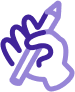
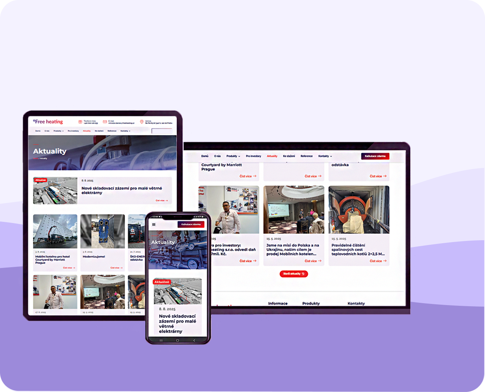
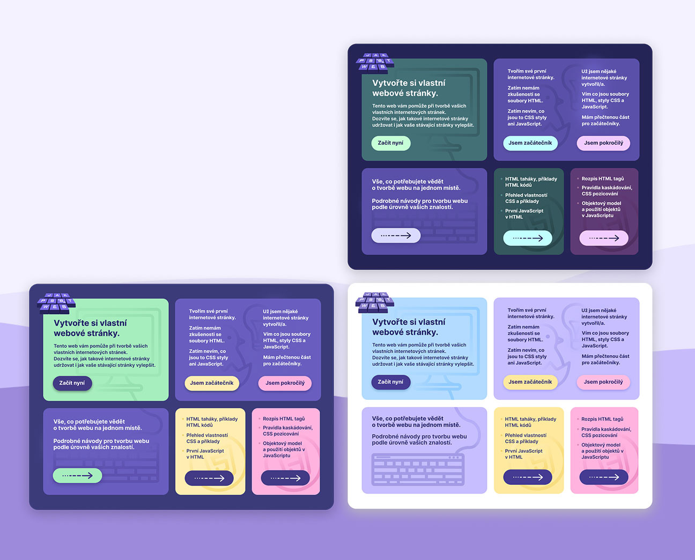

Nabídka
Portfolio
O mně
Kontakt
UX/UI design a web design
Projekty, na kterých jsem pracovala
Redesign sekce s aktualitami
Redesign webové sekce s aktualitami pro stránku “freeheating.cz”. Cílem bylo přetvořit design tak, aby byl pro uživatele přehlednější a snadno použitelný.

Sekce True Course Simulators
Design nové sekce pro stránku “vrgineers.com”. Cílem bylo vytvořit návrh, který bude v souladu s nynější vizuální identitou značky, ale zároveň se bude odlišovat od předešlé sekce.
Sekce s detaily o kotelnách
Design nové sekce pro stránku “mobilni-kotelna.cz”. Úkolem bylo vytvořit infokartu pro každou mobilní kotelnu. Jsou zde tři varianty designu. S ilustrací, s obrázkem a pouze s textem.
Bento mřížky
Úkolem bylo vytvořit varianty bento grids (tmavý a světlý mode) pro stránku “Jak psát web” a zároveň ji pomoci mřížky redesignovat tak, aby byla pro uživatele přehlednější.
